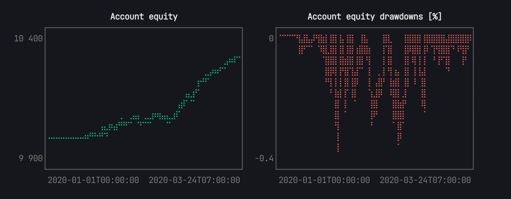

Random trading strategy example
This dummy example demonstrates how to backtest a simple random trading strategy using synthetic data generated in the script. The price series is a random walk with a drift of 0.1 and initial price 1000.
The strategy randomly buys or sells an instrument with a probability of 1%. Buy and sell orders use the same price series, implying a spread of 0. Each trade is executed at a fee of 0.1%. For the sake of illustration, only 75% of the order quantity is filled.
The account equity and drawdowns are collected for every hour and plotted at the end using UnicodePlots.
Code
using Fastback
using Dates
using Random
# set RNG seed for reproducibility
Random.seed!(42);
# generate synthetic price series
N = 2_000;
prices = 1000.0 .+ cumsum(randn(N) .+ 0.1);
dts = map(x -> DateTime(2020, 1, 1) + Hour(x), 0:N);
# define instrument
DUMMY = Instrument(1, Symbol("DUMMY"));
instruments = [DUMMY];
# create trading account with 10,000 start capital
acc = Account{Nothing}(instruments, 10_000.0);
# data collector for account equity and drawdowns (sampling every hour)
collect_equity, equity_data = periodic_collector(Float64, Hour(1));
collect_drawdown, drawdown_data = drawdown_collector(DrawdownMode.Percentage, Hour(1));
# loop over price series
for (dt, price) in zip(dts, prices)
# randomly trade with 1% probability
if rand() < 0.01
quantity = rand() > 0.4 ? 1.0 : -1.0
order = Order(oid!(acc), DUMMY, dt, price, quantity)
fill_order!(acc, order, dt, price; fill_quantity=0.75order.quantity, fee_pct=0.001)
end
# update position and account P&L
update_pnl!(acc, DUMMY, price)
# collect data for plotting
collect_equity(dt, acc.equity)
collect_drawdown(dt, acc.equity)
end
# print account statistics
show(acc)
# plot equity and drawdown
using UnicodePlots, Term
gridplot([
lineplot(
dates(equity_data), values(equity_data);
title="Account equity",
height=12
),
lineplot(
dates(drawdown_data), 100values(drawdown_data);
title="Drawdowns [%]",
color=:red,
height=12
)
]; layout=(1, 2))Output

